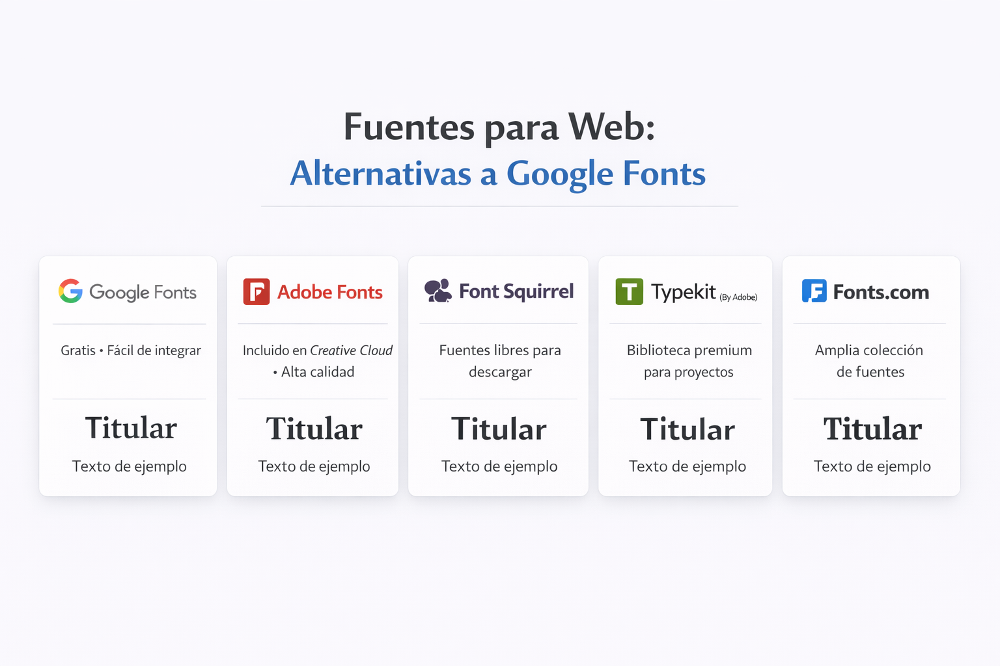
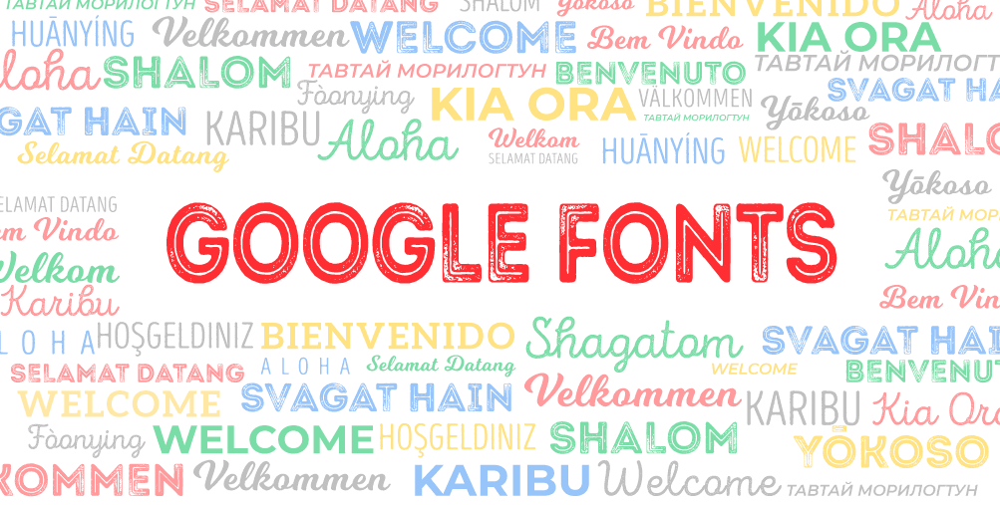

Guía para elegir las fuentes de mi página web
Google Fonts
Usar Google Fonts es una de las maneras más fáciles y rápidas de darle un toque profesional y único a tu página web. Además, es un servicio completamente gratuito.
Aquí tienes los pasos exactos para integrar cualquier fuente de Google en tu proyecto web:
Paso 1: Elige tu fuente
- Ve a la página oficial de Google Fonts.
- Explora o busca una fuente que te guste (por ejemplo, Roboto, Open Sans o Montserrat).
- Haz clic sobre la fuente que hayas elegido.
- En la esquina superior derecha, haz clic en el botón "Get font" (Obtener fuente).
Paso 2: Selecciona los estilos y obtén el código
- Una vez que hayas añadido la fuente, haz clic en el botón "Get embed code" (Obtener código de inserción).
- Aquí podrás elegir los "pesos" o grosores que necesitas (por ejemplo, Regular 400, Bold 700, Italic). Nota: Selecciona solo los que vayas a usar para no hacer que tu página cargue más lento.
- Google te dará dos opciones para insertar el código: <link> o @import. La opción <link> es la más recomendada porque suele cargar más rápido.
Paso 3: Pega el código en tu HTML
Copia el código que te proporciona la opción <link> y pégalo dentro de la etiqueta <head> de tu archivo HTML, justo antes de enlazar tu propio archivo CSS.
Paso 4: Aplica la fuente en tu CSS
hora que tu página web ya está "conectada" con la fuente, solo tienes que decirle a qué elementos quieres aplicársela usando tu archivo CSS.
En la misma página de Google Fonts, un poco más abajo, verás la regla CSS que debes usar (por ejemplo: font-family: 'Roboto', sans-serif;).
Alternativas a google fonts


